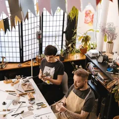

Tune in to something slow.
Four shows, made carefully. Turn the dial: the static clears when you land on a station, and the host tells you what you are in for.
94.4MHz
89.6 MHz
Small Hours
Nina Okafor
Late-night conversations for people who cannot sleep
94.4 MHz
Pocket Science
Dr Theo Marsh
99.8 MHz
The Long Way Round
Isla Brennan
Slow stories from places that are hard to reach

105.2 MHz
Make It Work
Dev Kapoor
How small teams build things that last
New episodes
All episodes
Why the sky is not purple
If violet scatters more than blue, why is the sky blue? A story about eyes, sunlight and a happy accident.

The potter who said no to Amazon
A small pottery turned down a giant order. Two years later, it is still here. A story about growth and enough.

Why we cannot stop checking
A psychologist explains why the phone in our pocket feels like a slot machine, and what happens when we put it down.

The lighthouse at the edge of Shetland
Isla spends a week with the last lighthouse keepers in Shetland and learns what it means to be needed.

Got a show in you?
We help independent hosts make shows they are proud of. Tell us your idea.
Pitch a show